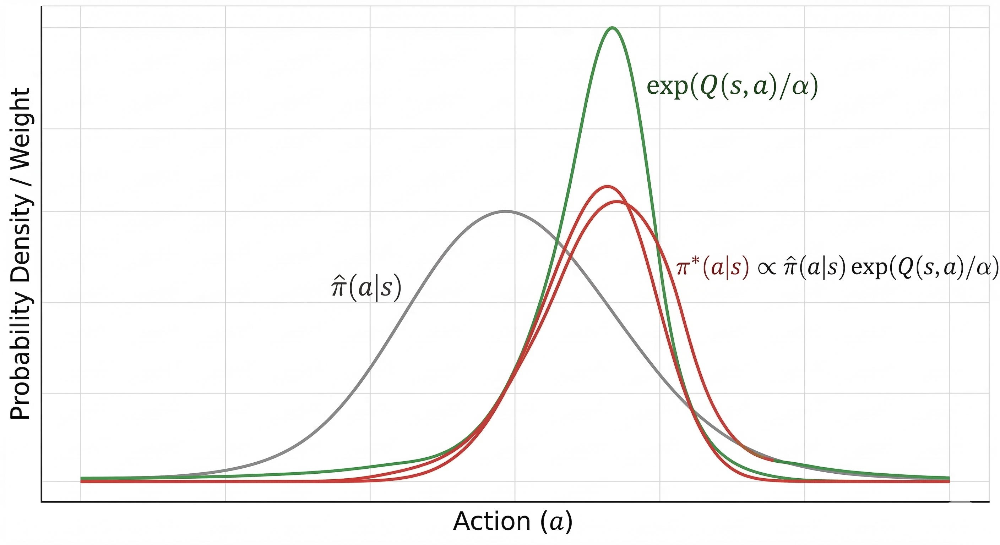
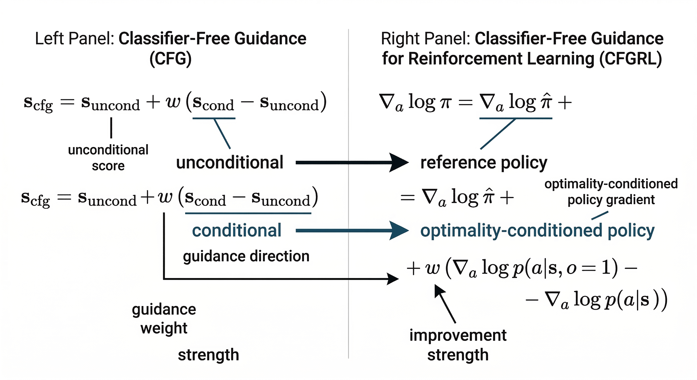

上一篇我写了：很多机器人策略里，RL正在逐渐长得更像 SL。
这篇想讲一下：Pi0.6*具体采用的方法：CFGRL。它的有趣之处在于一种针对RL的新的思考方式：
RL 里的 policy improvement，本身就可以被改写成一个最优性条件下的推断问题；而这个推断问题，又恰好可以由 classifier-free guidance 在采样时实现。
这样思考之后，整个故事就开始发生变化：
- 训练时，不一定非要显式做复杂的 RL optimization；
- 训练可以保留成一种稳定的、生成式的、接近 supervised learning 的过程；
- 真正的"朝更优动作偏移"这件事，可以发生在 sampling / inference time。
事实上之前有不少paper也探讨了类似的test time optimization,但这一篇写的相当简洁明了，读起来很容易理解整个故事，因此我这里简单介绍一下。
1. 先从一个熟悉的问题开始：RL 到底想做什么？
如果暂时不去管 Bellman backup、TD target、Actor-Critic 这些具体实现细节，RL 最核心的一件事其实很简单：
给定一个参考策略，把它往更优的方向推一点。
这个参考策略可以是：
- 数据集里的 behavior policy，
- 一个 imitation-learned policy，
- 或者一个已经训练好的 generative policy。
一个很自然的目标写法是：
$$\max_\pi\; \mathbb{E}_{a\sim \pi(\cdot\mid s)}[Q(s,a)] -\alpha\,\mathrm{KL}\big(\pi(\cdot\mid s)\,\|\,\hat\pi(\cdot\mid s)\big)$$
这里 $\hat\pi(a\mid s)$ 是参考策略。这个目标表达的是一个很朴素的平衡：
- 一方面，希望动作有更高的价值 $Q(s,a)$；
- 另一方面，又不希望策略离参考分布跑得太远。
把这个目标解出来，会得到一个非常漂亮的形式：
$$\pi^\star(a\mid s)\propto \hat\pi(a\mid s)\exp(Q(s,a)/\alpha)$$
这个式子几乎就是整篇文章最关键的一步。
它告诉我们，策略改进并不一定意味着重新学一个"完全不同"的策略。更准确地说，它是在做一件更温和、也更有结构的事：
$$\text{improved policy} = \text{reference policy} \times \text{optimality weight}$$
也就是说，新的策略不是凭空生成的，而是在原有策略 $\hat\pi$ 的基础上，按一个"最优性因子"重新加权。高 $Q$ 的动作被放大，低 $Q$ 的动作被压低。
这一点很重要：
RL 的 policy improvement，本质上可以看成一个乘积分布（product policy）。

2. 为什么这个"最优性因子"会变成一个推断目标？
到这里，一个自然的问题是：$\exp(Q(s,a)/\alpha)$ 为什么它可以被理解成一个 optimality term？为什么它和"推断"有关？
这就要引入一个非常经典的视角：control as inference。
在传统 RL 里，我们会说：
选择动作，是为了最大化 reward。
但在 control-as-inference 里，我们换了一种表述方式。我们人为引入一个二值变量 $O$：
$$O = 1 \quad \text{表示当前状态-动作是 optimal 的}$$
然后定义一个概率模型，让高回报动作更可能被视为"optimal"：
$$p(O=1\mid s,a)\propto \exp(r(s,a)/\alpha)$$
从这个视角看，控制问题就不再是"直接做优化"，而变成了：
在给定"这是 optimal 的"这个观测条件下，去反推什么动作更合理。
也就是说，原来的"max reward"问题，被改写成了一个"posterior inference"问题。Levine 的 control-as-inference 教程把 maximum-entropy RL 清楚地写成了这种概率图模型视角，而 SAC 也正是建立在 maximum-entropy RL 的框架之上。
当我们从 one-step reward 推到 long-horizon setting 时，这个最优性因子就不再只是 $\exp(r/\alpha)$，而会自然地对应到类似 $\exp(Q/\alpha)$ 这样的 long-horizon optimality weight。于是前面的 product policy
$$\pi^\star(a\mid s)\propto \hat\pi(a\mid s)\exp(Q(s,a)/\alpha)$$
就可以被理解成：
reference policy 在 optimality 条件下得到的后验分布。
这一步非常关键，因为它把两件看起来完全不同的事情对齐了：
- 一边是 RL 里的 policy improvement；
- 一边是概率模型里的 optimality-conditioned inference。
而 CFGRL 的真正贡献，就建立在这个对齐上。

3. 再回头看 CFG：它本质上是在做什么？
现在把视线切到生成模型这边。
Classifier-Free Guidance（CFG）最初来自 conditional diffusion。它的基本做法非常简单：
- 训练一个 conditional model：$p(x\mid c)$
- 同时训练一个 unconditional model：$p(x)$
- 在采样时，不直接只用 conditional score，而是使用：
$$s_{\text{cfg}}(x) = s_{\text{uncond}}(x) + w\big(s_{\text{cond}}(x)-s_{\text{uncond}}(x)\big)$$
这里 $w$ 是 guidance weight。当 $w$ 变大时，采样会更强地朝满足条件 $c$ 的方向偏移。CFG 的关键点在于：它不需要额外训练一个 classifier，而是直接通过 conditional / unconditional score 的差，得到一个"朝条件方向推进"的信号。
如果只从生成模型的角度看，这只是一个非常好用的 sampling trick。但如果把它和前面的 optimality inference 放在一起看，就会突然发现一个很强的结构相似性：
- RL 里，我们想从 reference policy 出发，朝"更 optimal"的方向推一点；
- CFG 里，我们也正是在 base distribution 上，加一个"朝条件方向推"的 guidance term。
这个相似性并不是巧合。CFGRL 的核心洞察就是：这两者实际上可以被写成同一种数学结构。

4. CFGRL 的关键一步：policy improvement 和 CFG 是同构的
前面已经得到 product policy：
$$\pi(a\mid s)\propto \hat\pi(a\mid s)\,\mathcal{O}(s,a)$$
其中 $\mathcal{O}(s,a)$ 是 optimality term，可以是 advantage 或 $Q$ 的某种单调函数。CFGRL 证明了，只要这个 optimality term 对 advantage 是单调的，就会带来策略改进；而进一步调大 guidance weight，本质上是在更强地强调 optimality。
现在对这个分布取 action-space 的 log-gradient：
$$\nabla_a \log \pi(a\mid s) = \nabla_a \log \hat\pi(a\mid s) + \nabla_a \log \mathcal{O}(s,a)$$
这看起来已经非常像一个"base score + guidance score"的结构了。
CFGRL 引入 optimality condition $o=1$，然后用 Bayes 关系得到：
$$\nabla_a \log p(o=1\mid s,a) = \nabla_a \log p(a\mid s,o=1) - \nabla_a \log p(a\mid s)$$
也就是说，最优性方向本身，可以写成两个 score 的差：
- 一个是 optimality-conditioned policy score
- 一个是 reference / unconditional policy score
于是整个式子就变成了：
$$s_{\text{guided}} = s_{\text{base}} + w\big(s_{\text{opt}}-s_{\text{base}}\big)$$
这和 CFG 的形式是一模一样的。
这就是 CFGRL 最核心的 insight：
classifier-free guidance 不是恰好"看起来像" policy improvement；它在结构上就对应于一个 controllable policy improvement operator。
换句话说，RL 里的 improvement，不一定非要通过参数更新来完成；它也可以表现为：
在一个已经学会数据分布的生成策略上，通过 sampling-time guidance，把当前输出往更优区域推过去。

5. 这件事为什么重要？因为它把"改进"从训练搬到了采样
传统 RL 的默认范式是：
而 CFGRL 给出了另一种可能：
- 训练时，保持一个更稳定、更像 supervised learning 的生成建模过程；
- 采样时，再通过 guidance 完成策略改进。
CFGRL 的论文里最醒目的一点就是：随着 guidance weight 的增加，offline RL 任务上的性能往往会稳定提升，而且这种提升不需要重新训练模型。作者把这一点概括为：用 supervised simplicity 来训练，但仍然可以在 inference time 实现"超越数据"的 improvement。
这背后的意义其实很大。
因为过去很多人默认认为，RL 之所以能超过 behavior cloning，是因为它在训练过程中显式地做了更复杂的优化。 CFGRL 则在提醒我们：
也许"超过数据"这件事，不一定要通过更复杂的 training objective 来实现；它也可以通过一个更聪明的 sampling operator 来实现。
这是一个新的视角：把一部分"优化的负担"从训练阶段，转移到推理阶段。

6. 接回上一篇：RL 为什么越来越像 Supervised Learning？
如果把 CFGRL 放回上一篇那条主线上看，它其实是在把那个趋势再往前推一步。
上一篇讲的是：随着 offline RL、sequence modeling、diffusion policy、VLA 等路线的发展，很多看起来"属于 RL"的方法，越来越多地把核心训练过程变成了：
也就是说，训练本身越来越像 supervised learning，而 reward / value 更多扮演的是一个 reweighting、filtering、conditioning 或 guidance 的角色。
CFGRL 把这个逻辑走得非常彻底：
- 它不再把 policy improvement 首先理解为 Bellman backup；
- 它先把 policy improvement 改写成 optimality inference；
- 再把这个 inference 和 CFG 对齐；
- 最后把真正的 improvement 交给 sampling-time guidance。
从这个意义上说，CFGRL 并不是在背离 RL，反而是在抽取 RL 最核心的部分——preference for better actions——并把它嵌入一个更稳定、更 scalable、更接近 supervised learning 的训练范式中。
7. 核心 Insights
Insight 1：Policy improvement 可以被写成一个 product policy
RL 里的策略改进，不一定非要先想到 Bellman backup。在 KL-regularized 视角下，它可以写成：
$$\pi^\star(a\mid s)\propto \hat\pi(a\mid s)\cdot \mathcal{O}(s,a)$$
即"参考策略 × 最优性因子"。
Insight 2：这个最优性因子，本质上可以被理解成一个 inference objective
在 control-as-inference 视角下，高 reward / 高 value 对应"更可能是 optimal"。于是，policy improvement 和 optimality-conditioned posterior inference 对齐了。
Insight 3：一旦写成这个形式，RL 就更容易被转化成一种 SL + Guided Sampling 的范式
这也是为什么，像 π0.6 这样的基础模型可以首先作为 supervised model 出现，而后续的改进方法则越来越像是在这个 supervised backbone 之上施加 reward-aware conditioning、advantage-aware extraction 或 sampling-time guidance。
In my last post, I wrote: in many robot policies, RL is gradually looking more and more like supervised learning.
This post dives into the specific method used by Pi0.6*: CFGRL. What makes it interesting is a new way of thinking about RL:
Policy improvement in RL can itself be rewritten as an inference problem under an optimality condition — and this inference problem can be implemented via classifier-free guidance at sampling time.
Once you think about it this way, the whole story starts to shift:
- Training doesn't necessarily require explicit, complex RL optimization;
- Training can remain a stable, generative process close to supervised learning;
- The actual "shift toward better actions" can happen at sampling / inference time.
In fact, several prior papers have explored similar ideas around test-time optimization, but this one is written with remarkable clarity, making the whole story easy to follow. So let me give a brief overview.
1. Starting from a Familiar Question: What Is RL Really Trying to Do?
If we set aside the implementation details — Bellman backup, TD targets, Actor-Critic — the core of RL is actually quite simple:
Given a reference policy, nudge it toward something better.
This reference policy could be:
- The behavior policy from a dataset,
- An imitation-learned policy,
- Or an already-trained generative policy.
A natural way to write the objective:
$$\max_\pi\; \mathbb{E}_{a\sim \pi(\cdot\mid s)}[Q(s,a)] -\alpha\,\mathrm{KL}\big(\pi(\cdot\mid s)\,\|\,\hat\pi(\cdot\mid s)\big)$$
Here $\hat\pi(a\mid s)$ is the reference policy. This objective expresses a simple balance:
- On one hand, we want actions with higher value $Q(s,a)$;
- On the other hand, we don't want the policy to drift too far from the reference distribution.
Solving this objective yields an elegant form:
$$\pi^\star(a\mid s)\propto \hat\pi(a\mid s)\exp(Q(s,a)/\alpha)$$
This equation is arguably the most critical step in the entire paper.
It tells us that policy improvement doesn't necessarily mean learning an entirely "different" policy. More precisely, it's doing something gentler and more structured:
$$\text{improved policy} = \text{reference policy} \times \text{optimality weight}$$
In other words, the new policy isn't created from scratch — it reweights the original policy $\hat\pi$ by an "optimality factor." Actions with high $Q$ get amplified; actions with low $Q$ get suppressed.
This is important:
Policy improvement in RL can essentially be viewed as a product distribution (product policy).
2. Why Does the "Optimality Factor" Become an Inference Objective?
At this point, a natural question arises: $\exp(Q(s,a)/\alpha)$ — why can it be understood as an optimality term? And why is it related to "inference"?
This requires introducing a classic perspective: control as inference.
In traditional RL, we say:
Choose actions to maximize reward.
But in control-as-inference, we reframe it. We introduce a binary variable $O$:
$$O = 1 \quad \text{means the current state-action is optimal}$$
Then define a probabilistic model where high-reward actions are more likely to be deemed "optimal":
$$p(O=1\mid s,a)\propto \exp(r(s,a)/\alpha)$$
From this perspective, the control problem is no longer "directly optimize" but rather:
Given the observation that "this is optimal," infer which actions are more reasonable.
The original "max reward" problem is rewritten as a "posterior inference" problem. Levine's control-as-inference tutorial clearly formulates maximum-entropy RL in this probabilistic graphical model view, and SAC is built precisely on the maximum-entropy RL framework.
When we extend from one-step reward to the long-horizon setting, the optimality factor is no longer just $\exp(r/\alpha)$, but naturally corresponds to something like $\exp(Q/\alpha)$ — a long-horizon optimality weight. So the product policy from before:
$$\pi^\star(a\mid s)\propto \hat\pi(a\mid s)\exp(Q(s,a)/\alpha)$$
can be understood as:
The posterior distribution of the reference policy conditioned on optimality.
This step is crucial because it aligns two seemingly different things:
- On one side: policy improvement in RL;
- On the other: optimality-conditioned inference in probabilistic models.
And CFGRL's true contribution is built on this alignment.
3. A Second Look at CFG: What Is It Really Doing?
Now let's switch to the generative modeling side.
Classifier-Free Guidance (CFG) originally comes from conditional diffusion. The basic idea is very simple:
- Train a conditional model: $p(x\mid c)$
- Simultaneously train an unconditional model: $p(x)$
- At sampling time, instead of using only the conditional score, use:
$$s_{\text{cfg}}(x) = s_{\text{uncond}}(x) + w\big(s_{\text{cond}}(x)-s_{\text{uncond}}(x)\big)$$
Here $w$ is the guidance weight. As $w$ increases, sampling shifts more strongly toward satisfying condition $c$. The key point of CFG: it doesn't need an additional classifier — it directly uses the difference between conditional and unconditional scores to get a "push toward the condition" signal.
From a generative modeling perspective alone, this is just a very useful sampling trick. But when you put it alongside the optimality inference framework, a striking structural similarity emerges:
- In RL, we want to start from the reference policy and nudge it toward "more optimal";
- In CFG, we're adding a "push toward the condition" guidance term on top of the base distribution.
This similarity is not a coincidence. CFGRL's core insight is: these two can actually be written as the same mathematical structure.
4. CFGRL's Key Step: Policy Improvement and CFG Are Isomorphic
We already have the product policy:
$$\pi(a\mid s)\propto \hat\pi(a\mid s)\,\mathcal{O}(s,a)$$
where $\mathcal{O}(s,a)$ is the optimality term — it can be a monotonic function of advantage or $Q$. CFGRL proves that as long as this optimality term is monotonic in advantage, it guarantees policy improvement; and increasing the guidance weight essentially strengthens the emphasis on optimality.
Now take the log-gradient in action space:
$$\nabla_a \log \pi(a\mid s) = \nabla_a \log \hat\pi(a\mid s) + \nabla_a \log \mathcal{O}(s,a)$$
This already looks very much like a "base score + guidance score" structure.
CFGRL introduces the optimality condition $o=1$, then uses Bayes' rule to get:
$$\nabla_a \log p(o=1\mid s,a) = \nabla_a \log p(a\mid s,o=1) - \nabla_a \log p(a\mid s)$$
That is, the optimality direction itself can be written as the difference of two scores:
- One is the optimality-conditioned policy score
- The other is the reference / unconditional policy score
So the full expression becomes:
$$s_{\text{guided}} = s_{\text{base}} + w\big(s_{\text{opt}}-s_{\text{base}}\big)$$
This is exactly the same form as CFG.
This is CFGRL's most central insight:
Classifier-free guidance doesn't just "look like" policy improvement — it structurally corresponds to a controllable policy improvement operator.
In other words, improvement in RL doesn't have to be done through parameter updates; it can also manifest as:
On a generative policy that has already learned the data distribution, use sampling-time guidance to push the output toward better regions.
5. Why Does This Matter? It Moves "Improvement" from Training to Sampling
The default paradigm in traditional RL is:
- Do policy improvement during training;
- Only do forward inference at test time.
CFGRL offers another possibility:
- During training, maintain a more stable, supervised-learning-like generative modeling process;
- During sampling, complete policy improvement via guidance.
The most striking result in the CFGRL paper: as guidance weight increases, performance on offline RL tasks tends to steadily improve — and this improvement requires no model retraining. The authors summarize this as: train with supervised simplicity, but still achieve "beyond-data" improvement at inference time.
The implications are significant.
Many people have assumed that RL can surpass behavior cloning because it explicitly performs more complex optimization during training. CFGRL reminds us:
Perhaps "going beyond the data" doesn't have to come from a more complex training objective — it can also come from a smarter sampling operator.
This is a new perspective: shifting some of the "optimization burden" from the training phase to the inference phase.
6. Connecting Back: Why Is RL Looking More Like Supervised Learning?
If we place CFGRL back on the main thread from the previous post, it's pushing that trend one step further.
The previous post argued: with the development of offline RL, sequence modeling, diffusion policies, VLAs and other approaches, many methods that "belong to RL" are increasingly turning their core training process into:
- Conditional modeling,
- Weighted regression,
- Sequence prediction,
- Generative modeling.
In other words, training itself is looking more and more like supervised learning, while reward/value plays the role of reweighting, filtering, conditioning, or guidance.
CFGRL takes this logic to its natural conclusion:
- It no longer frames policy improvement primarily as Bellman backup;
- It first rewrites policy improvement as optimality inference;
- Then aligns this inference with CFG;
- Finally delegates the actual improvement to sampling-time guidance.
In this sense, CFGRL isn't departing from RL — it's extracting RL's most essential part — preference for better actions — and embedding it in a more stable, scalable, supervised-learning-like training paradigm.
7. Core Insights
Insight 1: Policy improvement can be written as a product policy
Policy improvement in RL doesn't have to start with Bellman backup. Under the KL-regularized view, it can be written as:
$$\pi^\star(a\mid s)\propto \hat\pi(a\mid s)\cdot \mathcal{O}(s,a)$$
i.e., "reference policy × optimality factor."
Insight 2: The optimality factor can be understood as an inference objective
Under the control-as-inference view, high reward / high value corresponds to "more likely to be optimal." Thus, policy improvement aligns with optimality-conditioned posterior inference.
Insight 3: Once in this form, RL becomes easier to cast as SL + Guided Sampling
This is why foundation models like π0.6 can first appear as supervised models, while subsequent improvement methods increasingly look like reward-aware conditioning, advantage-aware extraction, or sampling-time guidance applied on top of this supervised backbone.